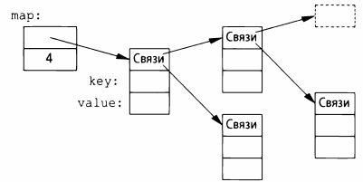
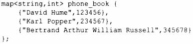
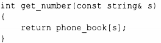

⇐11.3 list 11.5 unordered_map⇒
Написание кода для поиска имени в списке пар (имя.число) довольно утомительно. Кроме того, линейный поиск неэффективен везде, кроме кратчайших контейнеров. Стандартная библиотека предлагает сбалансированное двоичное дерево поиска (обычно это красно-черное дерево), именуемое map.
В других контекстах тип отображения map известен как ассоциативный массив или словарь. Он реализован как сбалансированное двоичное дерево.
Тип map стандартной библиотеки представляет собой контейнер из пар значений, оптимизированный для поиска. Мы можем использовать тот же инициализатор, что и для вектора и списка(§ 11.2, § 11.3):
При индексации по значению его первого типа (называемому ключо.rи) map возвращает соответствующее значение второго типа (называемое значением или отображае,rиым типом). Например:
Другими словами, индексация map - это, по сути, поиск, который мы называли get_number ().Если ключ key не найден, он вносится в map со значением по умолчанию для типа его value. Значение по умолчанию для целочисленного типа равно О; это значение, которое я выбрал для представления неверного номера телефона.
Если бы мы хотели избежать ввода неверных номеров в нашу телефонную книгу, то могли бы использовать find () и insert () вместо [].